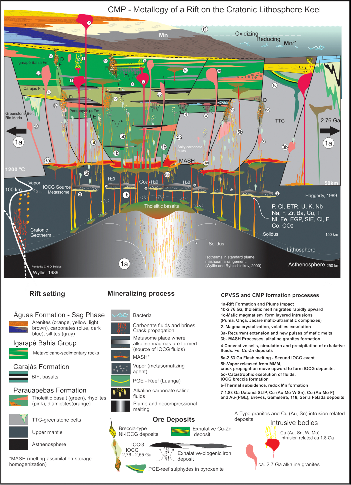

Carajás Mineral Province - Example of metalologeny of a rift above a cratonic lihtospheric keel

Resumo em Português
A Província Mineral de Carajás (PMC) está localizada na margem sudeste do Cráton Amazônico, no norte do Brasil. É o maior produtor mundial de minério de ferro de alto teor e um dos principais fornecedores globais de cobre, níquel, manganês e ouro. Este artigo apresenta a PMC como produto da evolução de um rift oblíquo (2,76–2,06 Ga) controlado pelo sistema transcorrente Canaã-Cinzento. O rift de Carajás está hospedado nos terrenos TTG-greenstone Rio Maria (3,0–2,85 Ga), sobrejaz uma quilha de manto litosférico subcratônico (MLSC) indicada por tomografia sísmica e é preenchido pelas sequências plutônico-vulcano-sedimentares de Carajás (SPVSC), que hospedam a PMC.O estágio de rifteamento (Grupo Grão Pará) teve início com intenso vulcanismo de fissura toleítico, com fluxos de basalto e riolito, intrusões coevais de granitos alcalinos e corpos máficos-ultramáficos, formações ferríferas bandadas (BIFs), folhelhos e leitos restritos de tufos. As Formações Azul e Águas Claras consistem principalmente em folhelhos e arenitos depositados durante o estágio de subsidência. A PMC compreende três estágios principais de formação de minério: (1) um estágio de pluma (~2,76–2,73 Ga), criando supergigantes depósitos sedimentares exalativos biogênicos de Fe, depósitos exalativos singenéticos de Cu-Au-Zn, exalativos de Mn, depósitos de Ni-PGE e o depósito IOCG Siqueirinho; (2) um estágio de metassoma (~2,68–2,50 Ga), formando os mais importantes depósitos IOCG como Salobo, Alemão e Igarapé Bahia; e (3) um estágio de subsidência (~2,68–2,06 Ga), com depósito sedimentar de Mn em ambiente oceânico estratificado controlado por redox. Propõe-se que os depósitos IOCG da PMC foram formados a partir de fluidos salinos carbonáticos exsolvidos de magmas mantélicos metassomáticos profundos, canalizados e concentrados ao longo de jogs e step-overs em sistemas de falhas transcorrentes no rift de Carajás.